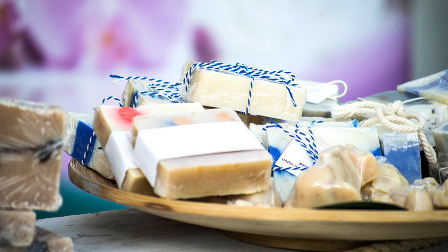
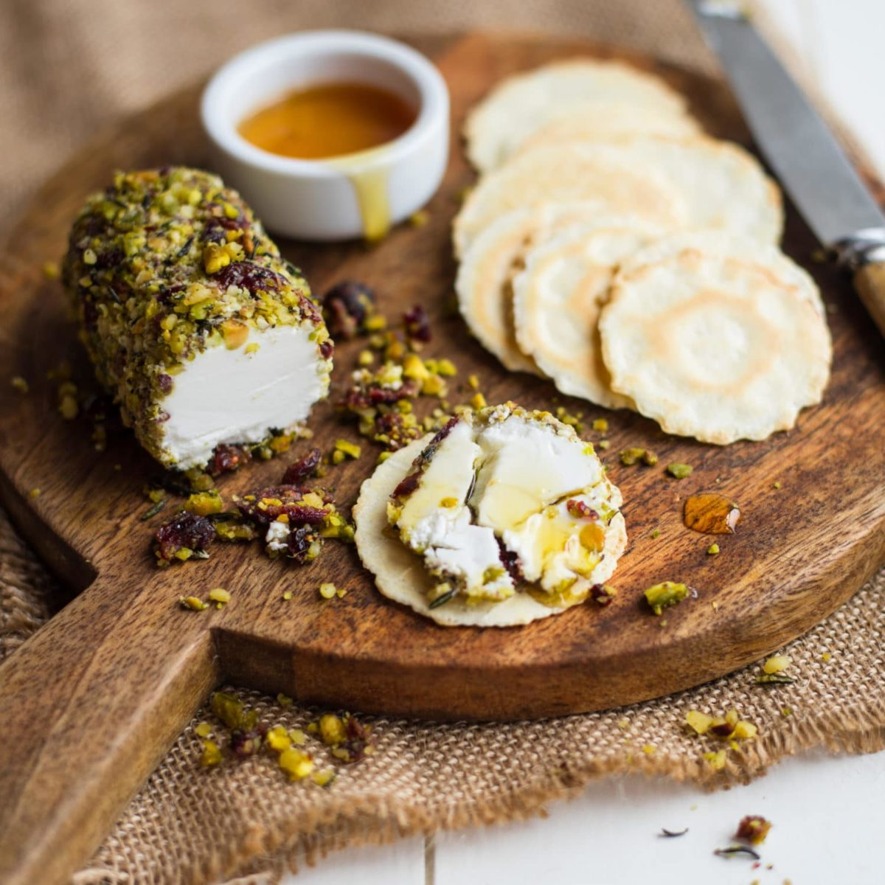
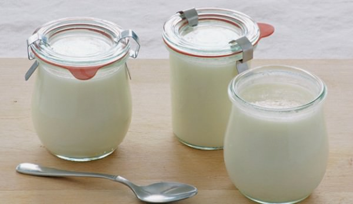

Our Products
Goat Milk Soap
Goat milk soap is great if you have acne, eczema, psoriasis, dry or sensitive skin. Full of beneficial minerals, vitamins and fatty acids.
Goat Cheese
Who knew that something so simple could taste so good? Goat cheese, with its pristine white color and distinct flavor is one of the most amazing foods in the world — a humble basic for some, a gourmet delight for others.
Goat Milk
Goat milk is a type of milk produced from goats. Like cow milk, it is technically considered a dairy product. Each serving of goat milk is high in many important micronutrients. These include calcium, phosphorus and riboflavin, plus heart-healthy fats and protein.